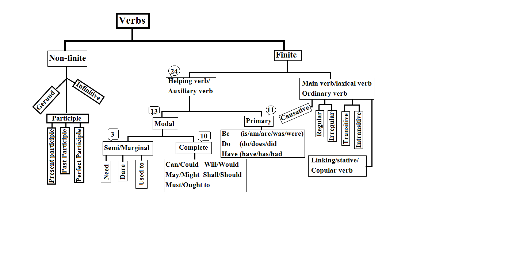
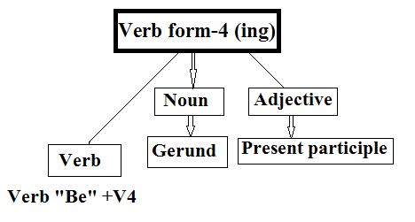

Listen to all these lessons via podcast: podcast name: Alok Pandey learn to speak English fluently.
A verb, from the Latin “verbum” meaning word, is a word of (part of speech):
So the “verbs” are only the word in a sentence that is changed, but any other parts of speech remain the same.
Kinds of verbs.
Here are the chat of all verbs to understand easily.
While writing or reading the verbs form 4 (ing) comes in different roles, so it is significant to understand. We will understand all v4 different roles today.
Role-1: As a finite, if verbs form-4 is followed by helping verbs “be” (if helping verbs “be” comes before verbs form-4). The role of the -ing form is as a main verb. Like:
So in the above sentences, going, playing, watching, sleeping, and waiting are verbs.
Role-2: As a gerund (non-finite), when a verb form-4 is used as a subject or an object. It is called a gerund. Like:
In the above sentences, walking, dancing, smoking, writing, and reading are gerund.
Role-3: As an adjective also called present participle (non-finite), when verb form-4 is used as an adjective in a sentence. It is called a present participle. Like:
In the above sentences, playing, interesting, barking, and tiring are adjectives. Since these verbs are saying something about the noun.
So, to understand it better see the chart:
Must read these all topics.